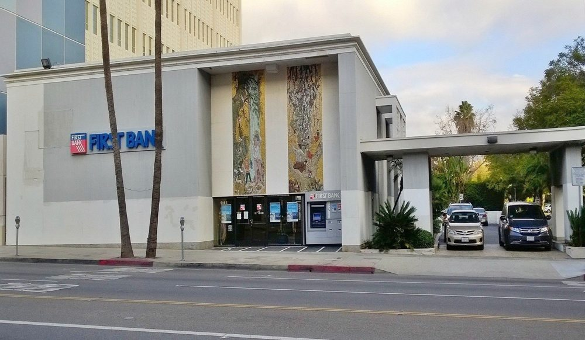

The First Bank Building (originally Ahmanson Bank & Trust) on Wilshire Boulevard was designed by Millard Sheets and built in 1959. In 2013, the property owners began researching the steps required to restore the historic structure, and in 2014 a City Landmark Assessment and Evaluation Report found that the building qualified as a historic landmark per the City of Beverly Hills' criteria.
Before moving forward with the restoration, the project team determined that the marble slab vertical veneer and concrete masonry anchoring system needed to be evaluated for structural integrity. A slab was removed on the north wall to inspect the system — and the team concluded the system had failed, adding safety, material, and installation concerns to the restoration's challenges. James Paley conducted an assessment and preliminary restoration and repair proposal for the marble and granite veneer and the granite porte cochère steps and landings.
The removed slab told the story. The gypsum-based plaster used for mechanical bonding had failed and released from the concrete masonry back-up, allowing the slabs to move and the joint material to fail. The slabs are 2 cm thick and hung on copper wire anchorage — a method that falls below industry guidelines for buildings exceeding fifteen feet, and one that has not been specified for decades. The copper wire had degraded to the point of being unsupportive, so the stacked slabs had shifted downward, compressing one on top of another, crumbling their own edges and transferring load to the granite at the base of the building, which had begun to crack.
Roughly one hundred and seventy-five marble slabs and granite bases were documented as damaged — chipped, cracked, bowed, water-stained, moved out of plane, or carrying substandard repairs. Whole sections had been replaced with plywood, floated over with plaster or Portland cement mortar, filled with resin, or swapped for painted concrete reproductions. Marble gains volume with each rise in temperature; where that movement was never accounted for in the anchoring design, joint sealant failed and water migrated into the open joints. On the porte cochère, spalling, cracking, and tenting of the granite landings pointed to water reaching the substructure.
A paint-removal test on the porte cochère pillars settled the question of whether the original surfaces could simply be cleaned. The fired-ceramic gold tile responded well, revealing its shimmering original face. The marble did not: the stone is permanently stained and surface-pitted, and could be brought back only through aggressive grinding and chemical cleaning that would substantially change the appearance of the building.
The analysis concluded that all of the vertical slabs require removal, evaluation, and documentation — with re-installation only if they can be restored to the building's historical character and exhibit the necessary structural integrity. The anchoring system also needs updating to meet building codes for slab expansion and contraction and seismic considerations, with in-kind replacement of any slabs that cannot be salvaged. Because the individual slabs are beyond repair, replacement was found to be both the more faithful restoration and the more prudent long-term investment.
The assessment was written against the Secretary of the Interior's Standards for Rehabilitation (36 CFR 67), the International Building Code requirements for the installation of wall coverings, and the Marble Institute of America's Dimension Stone Design Manual. Recommended next steps included sourcing and approving in-kind marble and granite samples, submitting them for ASTM testing for weathering and pollutant resistance, proving the anchorage and sealant on a mock-up before full installation, and putting a maintenance program in place once the work is complete.
Millard Sheets was one of Southern California's most influential mid-century designers; his murals and mosaics defined more than 120 branches of the Home Savings and Loan Association across the region.
